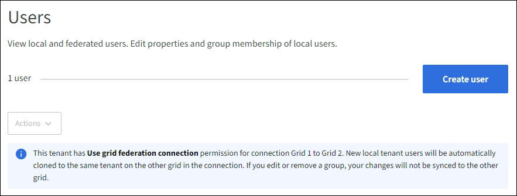

문서 변경 요청
문서 변경 요청 이 페이지 편집
이 페이지 편집 기여하는 방법 자세히 알아보기
기여하는 방법 자세히 알아보기로컬 사용자를 관리합니다
기여자
로컬 사용자를 만들고 로컬 그룹에 할당하여 사용자가 액세스할 수 있는 기능을 결정할 수 있습니다. Tenant Manager에는 ""root""라는 이름의 미리 정의된 로컬 사용자가 한 명 있습니다. 로컬 사용자를 추가 및 제거할 수는 있지만 루트 사용자는 제거할 수 없습니다.

|
StorageGRID 시스템에서 SSO(Single Sign-On)가 활성화된 경우 로컬 사용자는 그룹 권한에 따라 클라이언트 애플리케이션을 사용하여 테넌트의 리소스에 액세스할 수 있지만 테넌트 관리자 또는 테넌트 관리 API에 로그인할 수 없습니다. |
-
를 사용하여 테넌트 관리자에 로그인했습니다 "지원되는 웹 브라우저".
-
이 있는 사용자 그룹에 속해 있습니다 "루트 액세스 권한".
-
테넌트 계정에 * 그리드 페더레이션 연결 사용 * 권한이 있는 경우 에 대한 워크플로와 고려 사항을 검토했습니다 "테넌트 그룹 및 사용자를 클론 생성합니다"를 클릭합니다. 그러면 테넌트의 소스 그리드에 로그인됩니다.
로컬 사용자를 생성합니다
로컬 사용자를 만들어 하나 이상의 로컬 그룹에 할당하여 액세스 권한을 제어할 수 있습니다.
그룹에 속하지 않은 S3 사용자는 관리 권한이나 S3 그룹 정책이 적용되지 않습니다. 이러한 사용자는 버킷 정책을 통해 S3 버킷 액세스가 부여될 수 있습니다.
그룹에 속하지 않는 Swift 사용자는 관리 권한이나 Swift 컨테이너 액세스 권한이 없습니다.
사용자 생성 마법사에 액세스합니다
-
액세스 관리 * > * 사용자 * 를 선택합니다.
테넌트 계정에 * 그리드 페더레이션 연결 사용 * 권한이 있는 경우 파란색 배너는 해당 테넌트의 소스 그리드임을 나타냅니다. 이 그리드에서 만드는 모든 로컬 사용자는 연결의 다른 그리드에 복제됩니다.

-
사용자 생성 * 을 선택합니다.
자격 증명을 입력합니다
-
사용자 자격 증명 입력 * 단계에 대해 다음 필드를 입력합니다.
필드에 입력합니다 설명 전체 이름
이 사용자의 전체 이름(예: 사용자의 이름 및 성 또는 응용 프로그램의 이름).
사용자 이름
이 사용자가 로그인하는 데 사용할 이름입니다. 사용자 이름은 고유해야 하며 변경할 수 없습니다.
-
참고 *: 테넌트 계정에 * 그리드 페더레이션 연결 사용 * 권한이 있는 경우 대상 그리드에 해당 테넌트에 대해 동일한 * 사용자 이름 * 이 이미 있으면 클론 생성 오류가 발생합니다.
암호 및 암호 확인
사용자가 로그인할 때 처음 사용할 암호입니다.
액세스를 거부합니다
이 사용자가 하나 이상의 그룹에 속해 있더라도 테넌트 계정에 로그인하지 못하도록 하려면 * 예 * 를 선택합니다.
예를 들어, * 예 * 를 선택하여 사용자의 로그인 기능을 일시적으로 중단시킵니다.
-
-
Continue * 를 선택합니다.
그룹에 할당합니다
-
사용자를 하나 이상의 로컬 그룹에 할당하여 수행할 수 있는 작업을 결정합니다.
그룹에 사용자를 할당하는 것은 선택 사항입니다. 원하는 경우 그룹을 만들거나 편집할 때 사용자를 선택할 수 있습니다.
그룹에 속하지 않은 사용자에게는 관리 권한이 없습니다. 권한은 누적됩니다. 사용자는 자신이 속한 모든 그룹에 대한 모든 권한을 갖게 됩니다. 을 참조하십시오 "테넌트 관리 권한".
-
사용자 생성 * 을 선택합니다.
테넌트 계정에 * 그리드 페더레이션 연결 사용 * 권한이 있고 테넌트의 소스 그리드에 있는 경우 새 로컬 사용자는 테넌트의 대상 그리드에 복제됩니다. * 성공 * 은 사용자 세부 정보 페이지의 개요 섹션에 * 클론 생성 상태 * 로 표시됩니다.
-
사용자 페이지로 돌아가려면 * 마침 * 을 선택합니다.
로컬 사용자를 보거나 편집합니다
-
액세스 관리 * > * 사용자 * 를 선택합니다.
-
사용자 페이지에 제공된 정보를 검토하여 이 테넌트 계정에 대한 모든 로컬 및 통합 사용자의 기본 정보를 나열합니다.
테넌트 계정에 * 그리드 페더레이션 연결 사용 * 권한이 있고 테넌트의 소스 격자에서 사용자를 보고 있는 경우 파란색 배너는 사용자를 편집하거나 제거하면 변경 내용이 다른 격자와 동기화되지 않음을 나타냅니다.
-
사용자의 전체 이름을 변경하려면:
-
사용자의 확인란을 선택합니다.
-
작업 * > * 전체 이름 편집 * 을 선택합니다.
-
새 이름을 입력합니다.
-
변경 사항 저장 * 을 선택합니다
-
-
자세한 내용을 보거나 추가로 편집하려면 다음 중 하나를 수행합니다.
-
사용자 이름을 선택합니다.
-
사용자의 확인란을 선택하고 * Actions * > * View user details * 를 선택합니다.
-
-
각 사용자에 대해 다음 정보를 보여 주는 개요 섹션을 검토합니다.
-
전체 이름
-
사용자 이름
-
사용자 유형
-
액세스가 거부되었습니다
-
액세스 모드
-
그룹 구성원 자격
-
테넌트 계정에 * 그리드 페더레이션 연결 사용 * 권한이 있고 테넌트의 소스 격자에서 사용자를 보는 경우 추가 필드:
-
복제 상태, * 성공 * 또는 * 실패 *
-
이 사용자를 편집하면 변경 내용이 다른 눈금과 동기화되지 않음을 나타내는 파란색 배너입니다.
-
-
-
필요에 따라 사용자 설정을 편집합니다. 을 참조하십시오 로컬 사용자를 생성합니다 를 참조하십시오.
-
개요 섹션에서 이름 또는 편집 아이콘을 선택하여 전체 이름을 변경합니다 .
사용자 이름은 변경할 수 없습니다.
-
암호 * 탭에서 사용자 암호를 변경하고 * 변경 사항 저장 * 을 선택합니다.
-
액세스 * 탭에서 * 아니오 * 를 선택하여 사용자가 로그인할 수 있도록 하거나 * 예 * 를 선택하여 사용자가 로그인하지 못하도록 합니다. 그런 다음 * 변경 사항 저장 * 을 선택합니다.
-
액세스 키 * 탭에서 * 키 만들기 * 를 선택하고 의 지침을 따릅니다 "다른 사용자의 S3 액세스 키 생성".
-
그룹 * 탭에서 * 그룹 편집 * 을 선택하여 사용자를 그룹에 추가하거나 그룹에서 제거합니다. 그런 다음 * 변경 사항 저장 * 을 선택합니다.
-
-
변경한 각 섹션에 대해 * 변경 사항 저장 * 을 선택했는지 확인합니다.
로컬 사용자를 복제하십시오
로컬 사용자를 복제하면 새 사용자를 보다 빠르게 만들 수 있습니다.
|
|
테넌트 계정에 * 그리드 페더레이션 연결 사용 * 권한이 있고 테넌트의 소스 그리드에서 사용자를 복제하면 복제된 사용자는 테넌트의 대상 그리드에 복제됩니다. |
-
액세스 관리 * > * 사용자 * 를 선택합니다.
-
복제할 사용자의 확인란을 선택합니다.
-
Actions * > * Duplicate user * 를 선택합니다.
-
을 참조하십시오 로컬 사용자를 생성합니다 를 참조하십시오.
-
사용자 생성 * 을 선택합니다.
하나 이상의 로컬 사용자를 삭제합니다
StorageGRID 테넌트 계정에 더 이상 액세스할 필요가 없는 하나 이상의 로컬 사용자를 영구적으로 삭제할 수 있습니다.
|
|
테넌트 계정에 * 그리드 페더레이션 연결 사용 * 권한이 있고 로컬 사용자를 삭제하는 경우 StorageGRID는 다른 그리드에서 해당 사용자를 삭제하지 않습니다. 이 정보를 동기화해야 하는 경우 두 그리드에서 동일한 사용자를 삭제해야 합니다. |
|
|
통합 사용자를 삭제하려면 통합 ID 소스를 사용해야 합니다. |
-
액세스 관리 * > * 사용자 * 를 선택합니다.
-
삭제할 각 사용자에 대한 확인란을 선택합니다.
-
Actions * > * Delete user * 또는 * Actions * > * Delete users * 를 선택합니다.
확인 대화 상자가 나타납니다.
-
사용자 삭제 * 또는 * 사용자 삭제 * 를 선택합니다.